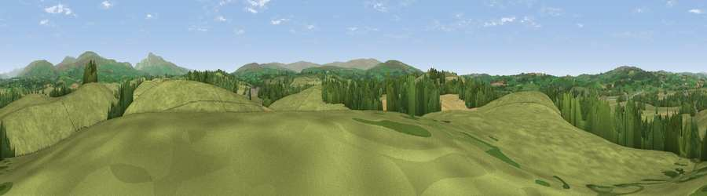

Viewpoint near Melling
#14895 in England · top 46% of its area beats it · near MellingWhere it is
The exact computed spot (SD 61175 71475). Click the marker for map links.
The view, rendered

A 360° render of this exact spot computed from the terrain model, tree cover and land cover — summer colours, afternoon light, calibrated against photographs of famous viewpoints. Real trees, hedges and buildings will differ in detail.
The panorama
Grey silhouette: terrain skyline in each direction (720 bearings, Earth curvature and refraction included). Dashed green: skyline with trees (+15 m) and buildings (+8 m) as obstacles. Blue strip: how far the ground is visible on each bearing.
Where the view opens
Wedge length = distance to the farthest visible ground on that bearing (vegetation-aware). Rings at 10, 25 and 50 km.
What fills the view
84% grassland · 10% woodland · 5% cropland
Angular shares of the visible panorama (visual magnitude), not map area. Landscape diversity 0.24 (0–1 Shannon).
Key numbers
More beautiful places nearby
The staircase of upgrades: each row has a higher view potential than everything closer. Driving times are estimates from straight-line distance, calibrated against real road routing — check an actual route before setting out.
| Place | Direction | Drive | Score |
|---|---|---|---|
| Viewpoint near Melling | SW · 1 km | ~4 min | 61.8 |
| Windy Bank | SW · 3 km | ~7 min | 65.9 |
| Havelock Hill | W · 6 km | ~13 min | 69.4 |
| Viewpoint near Wray | SSW · 7 km | ~14 min | 72.0 |
| Viewpoint near Wray | SSW · 7 km | ~15 min | 73.8 |
| Viewpoint near Over Kellet | WSW · 10 km | ~19 min | 77.4 |
| Barbon Low Fell | NNE · 10 km | ~20 min | 77.9 |
| Viewpoint near Lupton | NW · 12 km | ~22 min | 78.7 |
54.13764, -2.59574 · source: screening · position refined by local search. Computed location — check access rights before visiting.